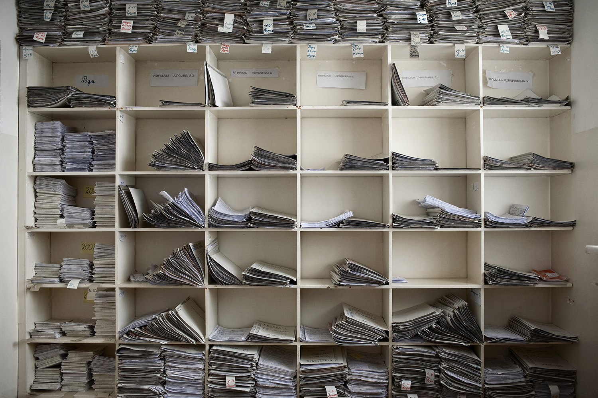

“TIME’s mission is to tell the stories that matter most, to lead conversations that change the world and to deepen understanding of the ideas and events that define our time.
There’s no doubt showcasing the stories of the individuals who help raise America’s children is part of that mission. Anastasia Taylor-Lind is unparalleled as a photojournalist in her artful and impactful documentation of women’s issues across the globe. Her unique ability to call attention to urgent stories with utmost intimacy makes her the perfect collaborator for a project spotlighting the convoluted challenges of child care. We are thrilled to approach this topic through Taylor-Lind’s distinctive lens, and to showcase our shared commitment to visual storytelling.”
–Katherine Pomerantz, TIME’s Director of Photography
